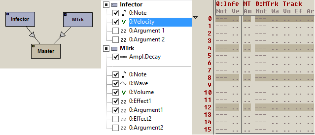

Patterns are the primary means to both automate plugin parameters and sequence sub patterns. Every pattern is based on a template called a "Pattern Format". The pattern format specifies which plugins and parameters can be automated in patterns based on it. Pattern formats can be edited at any time, and any change made in a template will immediately affect all depending patterns.
After using the machine view to create some plugins, use the pattern editor to create and edit patterns. Use the pattern format editor to adjust in detail which columns should appear in the patterns.
When starting a new project, the pattern editor shows an empty pattern based on an empty pattern format. The quickest way to add some columns is using the options for "Add Trigger Column", "Add Note/Velocity Columns", "Add All Columns" in the pattern editor context menu. Keep in mind these operations operate on the pattern format, such that if the project contains other patterns based on the same format, added columns will appear in them as well.
Some plugins have "track parameters": a group of parameters that can be repeated/duplicated and mapped to some internal concept of tracks in the plugin. By changing the number of tracks in the Plugin Properties, more or less parameters will become available in the pattern format editor.
Once some track parameters have been added to a pattern format, it is possible to quickly add or remove entire tracks from the current pattern format by pressing Ctrl+Num plus or Ctrl+Num minus.
Matilde Tracker uses tracks to play different notes/samples at the same time. FSM Infector uses tracks for polyphony. Pattern Player plugin uses tracks to play different patterns at the same time.
Trigger columns are based on plugin parameters as any other columns. However, there is only a single plugin that has a trigger typed parameter: the builtin Pattern Player plugin.
The pattern player plugin interfaces with the world through its parameters, and Buzé implements a ton of specialized features to help working with the particular trigger parameter.